| Alien 8 | Animations |
Alien 8's objects have no frame numbers. An object's graphic -- the first byte of its 32-byte record -- chooses both the routine that runs it every turn, through UPDATES, and the sprite it is drawn with, through GRAPHICS, so a thing animates by changing its own graphic: the legs step the low two bits of theirs, a turn puts them in a part-way view for two turns, a death's sparkle counts from 48 to 55, a socket's sparkle round 108 to 111. It is Knight Lore's scheme, and Pentagram's (see Knight Lore's animations and Pentagram's); what is animated is Alien 8's.
Each animation below was made by running the game in SkoolKit's simulator when these pages were built: started from the menu, put into the room wanted by the game's own restart (the room, the spot and the facing written into the start records at START_LEGS, and his death begun as START_SPARKLE begins it), and then run a turn at a time -- every object's routine, the depth-sorted drawing, the copy to the screen, the wait that evens out the pace -- with each picture read off the screen as the turn left it. Where more than that was staged, the animation says what. Each frame is shown for as long as the game took over its turn, counted in T-states in the simulator at 3.5MHz; the simulator has none of a real Spectrum's memory contention, so the game runs a little faster here than on the machine. A frame drawn the same as the one before is merged into it. A quiet room's turn is about 35 ms: the game waits out the time a turn with little to draw does not use (OBJECT_DONE), but cannot give back what a busy one overruns, so busy rooms run slower. The screens after a game and the menu have no turns: they were read once a television frame (69,888 T-states), with FLASH shown as the ULA shows it.
Under each: the graphics shown with their sprites, what was measured in the run, and the frames of the picture with what they show and how long each lasts.
The legs' routine, PLAYER_LEGS, reads the controls every turn, and while walk is held HANDLE_FORWARD steps the low two bits of their graphic through four frames -- a stride, legs together, the other stride, together again -- with a footstep (FOOTSTEP) on leaving each stride, and MOVE_PLAYER moves him three units the way he faces. The top (TOP_FOLLOWS_LEGS) copies the legs' place every turn, sits 12 above them and takes their graphic plus 16. The way he faces is two bits (GET_SPRITE_DIR): bit 2 of the graphic, the view from behind (16-19) or from the front (20-23), and the mirror bit. Facing 0 is from behind, not mirrored: up and to the left on the screen. When walk is let go the legs carry on to frame 1, legs together, and stand. Knight Lore's walk is six frames (its animations), Pentagram's four with frame 2 the standing one (its animations).
Graphics and their sprites: 16 (SPRITE16), 17 (SPRITE17), 18 (SPRITE18), 19 (SPRITE17), 32 (SPRITE32), 33 (SPRITE33), 34 (SPRITE34), 35 (SPRITE33).
Measured: legs 16, 17, 18, 19, top 32, 33, 34, 35 (not mirrored); from the first frame to the last he moved U -9, three units a turn (CALC_PLYR_DUV), a turn taking 138,202 to 158,236 T-states.
In the picture: 16+32 (40 ms), 17+33 (40 ms), 18+34 (40 ms), 19+35 (50 ms); 4 frames, 0.2 s in all.
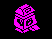
The same cycle seen from the front, not mirrored: down and to the right.
Graphics and their sprites: 20 (SPRITE20), 21 (SPRITE21), 22 (SPRITE22), 23 (SPRITE21), 36 (SPRITE36), 37 (SPRITE37), 38 (SPRITE38), 39 (SPRITE37).
Measured: legs 20, 21, 22, 23, top 36, 37, 38, 39 (not mirrored); from the first frame to the last he moved U +9, three units a turn (CALC_PLYR_DUV), a turn taking 138,879 to 160,141 T-states.
In the picture: 20+36 (40 ms), 21+37 (40 ms), 22+38 (40 ms), 23+39 (50 ms); 4 frames, 0.2 s in all.
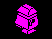
From behind, mirrored: up and to the right.
Graphics and their sprites: 16 (SPRITE16), 17 (SPRITE17), 18 (SPRITE18), 19 (SPRITE17), 32 (SPRITE32), 33 (SPRITE33), 34 (SPRITE34), 35 (SPRITE33).
Measured: legs 16, 17, 18, 19, top 32, 33, 34, 35 (mirrored); from the first frame to the last he moved V +9, three units a turn (CALC_PLYR_DUV), a turn taking 138,072 to 158,104 T-states.
In the picture: 16+32 (50 ms), 17+33 (40 ms), 18+34 (40 ms), 19+35 (50 ms); 4 frames, 0.2 s in all.
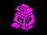
From the front, mirrored: down and to the left.
Graphics and their sprites: 20 (SPRITE20), 21 (SPRITE21), 22 (SPRITE22), 23 (SPRITE21), 36 (SPRITE36), 37 (SPRITE37), 38 (SPRITE38), 39 (SPRITE37).
Measured: legs 20, 21, 22, 23, top 36, 37, 38, 39 (mirrored); from the first frame to the last he moved V -9, three units a turn (CALC_PLYR_DUV), a turn taking 138,653 to 159,917 T-states.
In the picture: 20+36 (50 ms), 21+37 (40 ms), 22+38 (40 ms), 23+39 (50 ms); 4 frames, 0.2 s in all.
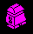
Alien 8's own. Knight Lore and Pentagram turn a quarter in one turn; here HANDLE_LEFT_RIGHT, on a turn key (or a joystick push under directional control), gives the legs a part-way view from TURN_RIGHT_VIEWS or TURN_LEFT_VIEWS -- 24 between the two facings away from the viewer, 25 between the two towards him, 26 side on, and 27, 26's drawing mirrored, on the other side -- and a count in bits 1-2 of +D. For graphics 24-27 the legs' routine is TURNING_LEGS, which holds the view for two turns, letting him only fall, and then gives him the standing graphic of the new facing from TURN_RIGHT_ENDS or TURN_LEFT_ENDS, with a footstep's sound. So a quarter turn takes three turns, and a walking robot stops while he turns. Here the right-turn key (X) was held from facing 0 for a whole circle: 0, 2, 1, 3 and 0 again, clockwise on the screen.
Graphics and their sprites: 17 (SPRITE17), 21 (SPRITE21), 24 (SPRITE24), 25 (SPRITE25), 26 (SPRITE26), 27 (SPRITE26), 33 (SPRITE33), 37 (SPRITE37), 40 (SPRITE40), 41 (SPRITE41), 42 (SPRITE42), 43 (SPRITE42).
Measured, turn by turn: 17 facing 0, 24 part way, 24 part way, 17m facing 2, 26 part way, 26 part way, 21 facing 1, 25 part way, 25 part way, 21m facing 3, 27m part way, 27m part way, 17 facing 0, 17 facing 0 (m: mirrored). 8 turns of part-way views in 12 turns of the key held: each quarter is two turns part way and one in the new facing, and the next quarter starts at once while the key is still down. The top's graphics were 33, 37, 40, 41, 42, 43, the legs' plus 16 every turn (TOP_FOLLOWS_LEGS). He did not move: U and V stayed at 128, 128.
In the picture: 17 facing 0 (30 ms), 24 part way (70 ms), 17m facing 2 (40 ms), 26 part way (70 ms), 21 facing 1 (40 ms), 25 part way (70 ms), 21m facing 3 (50 ms), 27m part way (70 ms), 17 facing 0 (80 ms); 9 frames, 0.5 s in all.
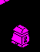
HANDLE_JUMP starts a jump when jump is held, he is not jumping already (bit 3 of +C) and not falling: a Z step of 8, with a rising sweep of sound (JUMP_SOUND). MOVE_PLAYER's gravity takes it away again -- one a turn while he is rising or level with jump held, two otherwise -- and a fall faster than two a turn sounds a note pitched by his height (BEEP_BY_Z). A jump always carries him forward, three units a turn, and the legs step all the way. Knight Lore's jump test, on the speed; Pentagram tests whether he stands on something. Here jump was held from standing until he landed; the picture stays over his place on the floor, so the rise is seen.
Graphics and their sprites: 16 (SPRITE16), 17 (SPRITE17), 18 (SPRITE18), 19 (SPRITE17), 32 (SPRITE32), 33 (SPRITE33), 34 (SPRITE34), 35 (SPRITE33).
Measured: the legs' Z turn by turn was 64, 71, 77, 82, 86, 89, 91, 92, 92, 91, 88, 83, 76, 67, 64, 64, 64 -- steps of +7, +6, +5, +4, +3, +2, +1, +0, -1, -3, -5, -7, -9, -3, +0, +0: up 28 and down again, rising by 7, 6, 5 ... (8, less a gravity of 1 a turn while jump is held and he is rising or level) and falling by 1, 3, 5 ... (2 a turn once he is going down), until the floor stops him. The jump carried him +42 in V, three units a turn the way he faces.
In the picture: 17 Z 64 (40 ms), 18 Z 71 (80 ms), 19 Z 77 (50 ms), 16 Z 82 (50 ms), 17 Z 86 (50 ms), 18 Z 89 (40 ms), 19 Z 91 (50 ms), 16 Z 92 (50 ms), 17 Z 92 (60 ms), 18 Z 91 (60 ms), 19 Z 88 (70 ms), and so on; 17 frames, 0.9 s in all.
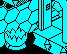
He walked into a spike (graphic 46, deadly both ways: SPIKES). The collision code marks him killed, and his routines turn both of his records into the sparkle a thing dies in (START_SPARKLE): SPARKLE_STEP steps it from 48 to 55 a turn at a time, with a sound that shortens as it goes, and 55 makes the record graphic 1, emptied when it is next drawn (SPARKLE_END_PLACE). With both of them empty the main loop starts the next life (NEW_LIFE): the start records, which hold him as he came into the room, are copied back, the room is built again, and he appears -- graphics 56 to 62, a frame every other turn (PLAYER_APPEARING), each with a sweep of sound, and 63, which gives him back his own graphic (PLAYER_APPEARED). Knight Lore's death and materialising (its animations), with a death of its own.
Graphics and their sprites: 48 (SPRITE48), 49 (SPRITE49), 50 (SPRITE48), 51 (SPRITE49), 52 (SPRITE52), 53 (SPRITE53), 54 (SPRITE54), 55 (SPRITE55), 56 (SPRITE55), 57 (SPRITE54), 58 (SPRITE53), 59 (SPRITE52), 60 (SPRITE49), 61 (SPRITE48), 62 (SPRITE49), 63 (SPRITE48).
Measured: legs and top turn by turn, 21+37, 22+38, 23+39, 20+36, 21+37, 22+38, 23+39, 48+48, 49+49, 50+50, 51+51, 52+52, 53+53, 54+54, 55+55, 56+56, 56+56, 57+57, 57+57, 58+58, 58+58, 59+59, 59+59, 60+60, 60+60, 61+61, 61+61, 62+62, 62+62, 63+63, 21+37, 21+37, 21+37, 21+37. The sparkle is a frame a turn; appearing took 15 turns, a frame every other turn (on odd turn counts). The long frame near the end is the turn in which the room was built again and the next, which copies the whole of it to the screen.
In the picture: 21+37 (70 ms), 22+38 (110 ms), 23+39 (110 ms), 20+36 (100 ms), 21+37 (80 ms), 22+38 (70 ms), 23+39 (80 ms), 48+48 (110 ms), 49+49 (110 ms), 50+50 (100 ms), 51+51 (90 ms), and so on; 25 frames, 3.2 s in all.
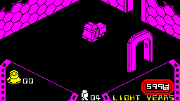
Only valves can be carried. TAKE_OR_LEAVE, from the legs' routine, acts once for each press of the pick-up key, and only while he stands on something inside the walls. It looks for a valve within his reach (CAN_PICK_UP, his box made four bigger each way) in the two records a room keeps for what lies in it from the places (FIND_SPECIAL_OBJS_HERE), and takes it into the first of three slots, moving the others along. With nothing to take it puts down whatever is in the last slot, under him, and lifts him 12 onto it; with the last slot empty it only moves the slots along. So a valve just picked up takes two more presses to reach the last slot and a fourth to go down. The slots are the panel's three boxes (SHOW_CARRIED), each coloured by the kind of valve, and every press that gets that far beeps (PLAIN_BEEP). Here a valve (graphic 97) was staged in the empty room 14 units in front of him, as the build's valve session puts one (one of the places given the valve and the room); the presses and all that follows are the game's. The picture is the room and the panel.
Graphics and their sprites: 97 (SPRITE97).
Measured: before the first press the valve (graphic 97) lay in record 2 at Z 64 and he stood at Z 64; each press moved it one box along the panel (the slots CARRIED, then the one after, then CARRIED_LAST); the fourth put it back in record 2 at Z 64, under him, and he was lifted to Z 76, standing on it. Every press played PLAIN_BEEP's beep.
In the picture: in the room, Z 64, him 64 x2 (60 ms), box 1 x4 (150 ms), box 2 x4 (150 ms), box 3 x4 (150 ms), in the room, Z 64, him 76 x6 (220 ms); 20 frames, 0.7 s in all.
Each cryogenic chamber has a socket (SOCKET, graphics 112-115, one for each kind of valve), built with its sparkle in the record after it (SOCKET_SPARKLE): the sparkle hovers 13 above the socket and steps through four frames, 108-111, drawn with the sprites of the sparkle a thing dies in; when the frame comes round to the socket's kind it becomes for two turns a picture of the valve the socket wants (WANTED_VALVE, graphics 104-107, drawn with the valves' sprites). Both go the moment anything lies in the room from the places (ANY_SPECIAL_HERE), and the socket puts the sparkle back when the room is clear of them again. Here room $0C's socket, of kind 0, with nothing from the places in the room.
Graphics and their sprites: 112 (SPRITE112), 108 (SPRITE52), 109 (SPRITE49), 110 (SPRITE48), 111 (SPRITE49), 104 (SPRITE96).
Measured: the record after the socket (graphic 112, kind 0) went 108, 109, 110, 111, 104, 104, 108, 109, 110, 111, 104, 104, 108, 109, 110, 111 -- the sparkle (108-111) a frame a turn, and the valve wanted (104) for two turns each time the frame came round to 108: 4 of 16 turns. It hovered at Z 77, 13 above the socket's 64.
In the picture: 108 (140 ms), 109 (140 ms), 110 (140 ms), 111 (140 ms), 104 (210 ms), 108 (140 ms), 109 (140 ms), 110 (140 ms), 111 (140 ms), 104 (210 ms), 108 (140 ms), and so on; 14 frames, 2.1 s in all.
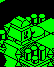
A valve does the work itself (LOOSE_VALVE). Every turn, if the room's socket is of its kind, it takes a step of one unit in U and in V towards it; when it sits exactly on it -- the same U and V, 12 above the socket's base -- it becomes a seated valve (graphic 4 more, SEATED_VALVE, which never moves again and cannot be picked up) and activates the chamber in the same turn (the next picture). Room $0C's socket is at the bottom of a pit of blocks. Here he stood on the block beside it, carrying a valve of its kind in the last slot, and pressed the pick-up key: TAKE_OR_LEAVE put the valve down under him, it slid out from under him a unit a turn, dropped into the pit onto the socket and seated itself, and the colours went round. Staged: the valve written into the last slot as a pick-up leaves it (TAKE_OR_LEAVE), and him put 8 above the block to land on it; the rest is the game.
Graphics and their sprites: 96 (SPRITE96), 100 (SPRITE96), 112 (SPRITE112).
Measured: put down under him at V 104 and Z 88 (he was lifted to Z 100), and already a step on by the end of that turn, the valve's V went 105, 106, 107, 108, 109, 110, 111, 112, 113, 114, 115, 116, 117, 118, 119, 120, 120, 120 -- a unit a turn towards the socket's 120 -- and its Z 88, 88, 88, 88, 88, 88, 88, 88, 88, 88, 88, 88, 88, 87, 85, 82, 78, 76: out from under him (he fell back to Z 88, the top of the block) and down into the pit onto the socket, 12 above its base at 64. The turn after it sat there it became graphic 100, 18 turns after the press.
In the picture: carried x2 (210 ms), valve 96 V 105 Z 88 (200 ms), valve 96 V 106 Z 88 (110 ms), valve 96 V 107 Z 88 (100 ms), valve 96 V 108 Z 88 (100 ms), valve 96 V 109 Z 88 (120 ms), valve 96 V 110 Z 88 (120 ms), valve 96 V 111 Z 88 (120 ms), valve 96 V 112 Z 88 (120 ms), valve 96 V 113 Z 88 (120 ms), valve 96 V 114 Z 88 (120 ms), and so on; 37 frames, 3.9 s in all.
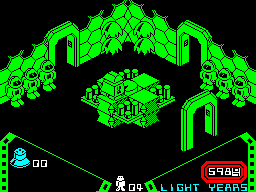
The activation, inside the valve's update (LOOSE_VALVE): sixteen passes over the whole attribute file, each adding one to every cell's ink -- twice round the eight colours, black among them -- each with a sparkle's sound (SPARKLE_SOUND) and a pause; then the room's ink is made white in its record for the rest of the game, the screen and the panel are coloured again (COLOUR_PANEL), and CHAMBERS goes up by one and is printed; the twenty-fourth ends the game (GAME_ENDED). All of it is one turn of the game, over a second long: the picture cuts it at the end of each pass (the DEC D at $B026), each piece shown as long as it took. The objects are not redrawn until the turn's end, so the valve and the panel's box change only in the last picture. The whole screen, from the same run as the one before.
Graphics and their sprites: 100 (SPRITE96).
Measured: the turn the chamber was activated in took 4,072,726 T-states (1.16 s), of which each of the middle passes over the 768 attribute cells took 222,980 T-states with its sparkle's sound and pause. After it the valve was graphic 100 at U 136, V 120, Z 76 -- the socket's U and V and its Z 64 plus 12 -- the room's ink (ROOM_INK) had gone from 4 to 7, and CHAMBERS from 00 to 01.
In the picture: 00 activated x2 (260 ms), pass 1 (90 ms), pass 2 (60 ms), pass 3 (60 ms), pass 4 (60 ms), pass 5 (60 ms), pass 6 (60 ms), pass 7 (60 ms), pass 8 (60 ms), pass 9 (60 ms), pass 10 (60 ms), and so on; 23 frames, 1.7 s in all.
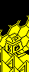
LIFT, graphic 47, in room $23. It stays where it is until the robot lands on it -- the collision code marks what he lands on (bit 3 of +D) -- and then goes up -- a unit a turn with him on it (measured) -- until it passes LIFT_TOP, which the first lift in the room sets to its own Z plus 48; then it comes down a unit a turn, and from the floor it starts up again. A note pitched by its height every turn it moves. Pentagram's lift (its animations) keeps its state in +17 and stops at a fixed 176.
Graphics and their sprites: 47 (SPRITE30).
Measured: the lift's Z went from 64 up to 113 in 49 turns of one unit each and down again to 64 in 49, with his legs 12 to 14 above it all the way; LIFT_TOP was 112 (its first Z, 64, plus 48). The turns took 155,451 to 443,709 T-states.
In the picture: 47 Z 64 (250 ms), 47 Z 65 (120 ms), 47 Z 66 (120 ms), 47 Z 67 (120 ms), 47 Z 68 (120 ms), 47 Z 69 (110 ms), 47 Z 70 (100 ms), 47 Z 71 (100 ms), 47 Z 72 (100 ms), 47 Z 73 (100 ms), 47 Z 74 (100 ms), and so on; 101 frames, 8.2 s in all.
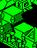
The lift's routine entered at its second part, BOBBER (in LIFT), for graphic 31: always moving, whether ridden or not, down a unit a turn and up two, the top being LIFT_TOP, which the first bobbing block in the room sets to its own Z. Here room $36's two, half a cycle apart.
Graphics and their sprites: 31 (SPRITE30).
Measured over 64 turns: Z 76 to 102, 1 a turn down and 2 up; Z 76 to 102, 1 a turn down and 2 up; LIFT_TOP was 100.
In the picture: 31 Z 82, 31 Z 98 (140 ms), 31 Z 81, 31 Z 97 (140 ms), 31 Z 80, 31 Z 96 (140 ms), 31 Z 79, 31 Z 95 (140 ms), 31 Z 78, 31 Z 94 (140 ms), 31 Z 77, 31 Z 93 (140 ms), 31 Z 76, 31 Z 92 (140 ms), 31 Z 76, 31 Z 91 (140 ms), 31 Z 78, 31 Z 90 (150 ms), 31 Z 80, 31 Z 89 (150 ms), 31 Z 82, 31 Z 88 (150 ms), and so on; 64 frames, 8.6 s in all.
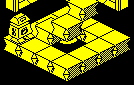
Graphics 68-71 (CONVEYOR_PLUS_V, CONVEYOR_PLUS_U, CONVEYOR_MINUS_V, CONVEYOR_MINUS_U) never move: each turn they give themselves a step of two units, +V, +U, -V or -U, and what lands on one takes that step (the collision code gives a thing landing on another the other's U and V steps where it has none of its own), and a beep sounds (HIGH_BEEP). Room $0D's are laid in a ring round a spike; he was dropped on the first piece and stood still, and was carried round. Pentagram's conveyors push every other turn from a table (its animations).
Graphics and their sprites: 68 (SPRITE30), 69 (SPRITE30), 70 (SPRITE30), 71 (SPRITE30).
Measured: his U and V went from 106, 104 to 136, 152; every turn's move was one of (-2, +0), (+0, +2), (+2, +0) in U and V, two units a turn along the conveyor under him, turning the corners with the ring. He stood still throughout.
In the picture: U 106 V 104 (100 ms), U 108 V 104 (90 ms), U 110 V 104 (80 ms), U 112 V 104 (80 ms), U 114 V 104 (80 ms), U 116 V 104 (80 ms), U 118 V 104 (80 ms), U 120 V 104 (80 ms), U 122 V 104 (100 ms), U 124 V 104 (110 ms), U 126 V 104 (110 ms), and so on; 56 frames, 5.8 s in all.
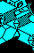
DROPPING_BLOCK, graphic 44, in room $12. Each turn the robot (or another mover of graphics 16 to 47) stands on it, it sinks one unit, with a grinding note pitched by its height, until it lands on what is under it. Knight Lore's dropping block.
Graphics and their sprites: 44 (SPRITE30).
Measured: the block's Z went from 87 to 64, one unit a turn for 23 turns, with him on top, and stopped on the floor; the turns took 242,698 to 332,841 T-states.
In the picture: 44 Z 87 (80 ms), 44 Z 86 (90 ms), 44 Z 85 (90 ms), 44 Z 84 (90 ms), 44 Z 83 (90 ms), 44 Z 82 (90 ms), 44 Z 81 (90 ms), 44 Z 80 (90 ms), 44 Z 79 (90 ms), 44 Z 78 (90 ms), 44 Z 77 (90 ms), and so on; 25 frames, 2.5 s in all.
COLLAPSING_BLOCK, graphic 45, in room $15. Landed on, it becomes graphic 64 and is stepped on at once to 65 (SPARKLE_STEP), which empties it the turn after (SPARKLE_END_PLACE), and he falls to the floor. Building the room again brings it back. Knight Lore's crumbling block goes in a frame of sparkle (its animations).
Graphics and their sprites: 45 (SPRITE30), 65 (SPRITE49).
Measured: the block's graphic turn by turn, 45, 65, 0, 0, 0, 0, 0, 0; his legs' Z 78, 76, 76, 74, 70, 64, 64, 64. The 64 is set and stepped on to 65 in the same turn (COLLAPSING_BLOCK jumps into SPARKLE_STEP), so it is never drawn.
In the picture: 45 (60 ms), 65 (120 ms), - x4 (340 ms); 6 frames, 0.5 s in all.
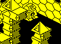
SHUTTLE_U, graphic 66, and SHUTTLE_V, graphic 67, the same along V: the block follows the turn counter, whose low five bits folded at bit 4 go 0 to 15 and back over 32 turns, stepping a unit a turn towards that place in a span of 16; blocks in odd-numbered records add 16 first, so they run half a cycle out of step with the others. A note pitched by U (or V) every turn. Knight Lore's shuttle_block. Here room $61's two, high up.
Graphics and their sprites: 66 (SPRITE30), 67 (SPRITE30).
Measured over 40 turns: graphic 66 along U, 104 to 119 in steps of 1, standing still for 2 of the turns; graphic 67 along V, 104 to 119 in steps of 1, standing still for 2 of the turns -- a turn standing at each end, where the folded count repeats.
In the picture: 66 U 115 V 120, 67 U 168 V 108 (140 ms), 66 U 114 V 120, 67 U 168 V 109 (140 ms), 66 U 113 V 120, 67 U 168 V 110 (140 ms), 66 U 112 V 120, 67 U 168 V 111 (140 ms), 66 U 111 V 120, 67 U 168 V 112 (150 ms), 66 U 110 V 120, 67 U 168 V 113 (160 ms), 66 U 109 V 120, 67 U 168 V 114 (160 ms), 66 U 108 V 120, 67 U 168 V 115 (150 ms), 66 U 107 V 120, 67 U 168 V 116 (150 ms), 66 U 106 V 120, 67 U 168 V 117 (150 ms), 66 U 105 V 120, 67 U 168 V 118 (150 ms), and so on; 38 frames, 5.9 s in all.
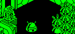
The rooms with fragile things (FRAGILE, graphic 129: deadly both ways, and it breaks as soon as anything moves it) have a robot (REMOTE_ROBOT) that the player drives from a pad (REMOTE_PAD) and four buttons (REMOTE_BUTTON) by standing on them: each button, by its graphic and its mirror bit, orders the robot in control two units a turn one way (REMOTE_STEPS), and the pad holds it still. The robot is harmless and pushes what it walks into. Here room $D9: he was put on the mirrored button of graphic 122 (order 3, plus V), as landing on it would leave him, and stayed there; the robot walked into the fragile thing in its path, which went through the last two frames of the dying sparkle (54, 55) and was gone.
Graphics and their sprites: 124 (SPRITE124), 125 (SPRITE125), 126 (SPRITE126), 127 (SPRITE127), 129 (SPRITE129), 54 (SPRITE54), 55 (SPRITE55).
Measured: REMOTE_ORDERS was $83 (bit 7, a robot in control; order 3) while he stood on the button; the robot's steps were (+0, +0), (+0, +2) in U and V, its graphic stepping 124-127; on turn 27 the thing in its way went 54, 55, 0 and its record emptied.
In the picture: robot 124 V 120, it 129 (90 ms), robot 125 V 122, it 129 (120 ms), robot 126 V 124, it 129 (110 ms), robot 127 V 126, it 129 (110 ms), robot 124 V 128, it 129 (110 ms), robot 125 V 130, it 129 (110 ms), robot 126 V 132, it 129 (110 ms), robot 127 V 134, it 129 (110 ms), robot 124 V 136, it 129 (110 ms), robot 125 V 138, it 129 (110 ms), robot 126 V 140, it 129 (110 ms), and so on; 32 frames, 4.0 s in all.
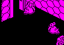
CLOCKWORK_MOUSE, graphics 116-119: deadly both ways. A mouse runs straight along U or V at two to five units a turn (the turn counter's low two bits plus two), flipping between two graphics, for a random count of turns up to 15; when it is stopped, is blocked or has run its count it beeps (HIGH_BEEP) and turns a quarter, left or right at random, with a new speed and count. Here room $4D's two, with him standing where they did not reach him in this run.
Graphics and their sprites: 116 (SPRITE116), 117 (SPRITE117), 118 (SPRITE118), 119 (SPRITE119).
Measured over 64 turns: moves of 1, 2, 3, 4, 5 units a turn (two to five, less where the collision code cut one short) along U or V, never both at once, and 23 quarter turns between the two mice (the mirror flag flipping each time); the graphics flip between a pair every turn they run.
In the picture: 118 U 72 V 143, 118 U 135 V 128 (80 ms), 119 U 72 V 140, 119 U 138 V 128 (90 ms), 118 U 72 V 137, 118 U 138 V 125 (70 ms), 119 U 72 V 134, 119 U 138 V 122 (60 ms), 118 U 72 V 131, 118 U 138 V 119 (60 ms), 119 U 72 V 128, 119 U 138 V 116 (60 ms), 118 U 72 V 125, 118 U 138 V 113 (60 ms), 119 U 72 V 122, 119 U 138 V 110 (70 ms), 118 U 72 V 119, 118 U 138 V 107 (60 ms), 119 U 72 V 116, 119 U 138 V 104 (60 ms), 118 U 72 V 113, 116 U 138 V 104 (80 ms), and so on; 64 frames, 4.2 s in all.
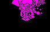
SPARK_CHASER, graphics 76-79: a crackle of sparks that heads for the robot at four units a turn in U and in V (MOVE_TOWARDS_PLAYER), runs through its four frames every turn and sounds a note pitched by its position. Nothing makes it deadly: it shoves him about like anything else that moves. Here room $9C's, coming at him and pushing him until both were stopped.
Graphics and their sprites: 76 (SPRITE48), 77 (SPRITE49), 78 (SPRITE52), 79 (SPRITE49).
Measured: its steps from turn to turn were (-4, +0), (+4, -4), (+4, +0) in U and V; its graphics 78, 79, 76, 77, 78, 79, 76, 77 ...; it came up against him and pushed him +0 in U and -28 in V before both were stopped, and he was not harmed.
In the picture: 78 U 155 V 115 (80 ms), 79 U 151 V 115 (80 ms), 76 U 155 V 111 (80 ms), 77 U 151 V 111 (70 ms), 78 U 155 V 107 (80 ms), 79 U 151 V 107 (70 ms), 76 U 155 V 103 (80 ms), 77 U 151 V 103 (60 ms), 78 U 155 V 99 (70 ms), 79 U 151 V 99 (60 ms), 76 U 155 V 95 (70 ms), and so on; 40 frames, 2.3 s in all.
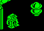
SLOW_CHASER, graphics 120 and 121: deadly both ways; one unit a turn towards him in U and in V (MOVE_TOWARDS_PLAYER), falling, flipping between its two graphics, with a warble (WARBLE_SOUND). Here room $5E's, with him standing still in the corner furthest from it, until it reached him.
Graphics and their sprites: 120 (SPRITE120), 121 (SPRITE121).
Measured: its steps from turn to turn were (-1, -1), (+1, -1), (+1, +0) in U and V, its graphic flipping between 120 and 121 every turn; from U 150, V 118, with him at U 150, V 72, it reached him in 35 turns, and he died.
In the picture: 120 U 150 V 118 (60 ms), 121 U 149 V 117 (60 ms), 120 U 150 V 116 (60 ms), 121 U 149 V 115 (50 ms), 120 U 150 V 114 (60 ms), 121 U 149 V 113 (60 ms), 120 U 150 V 112 (60 ms), 121 U 149 V 111 (50 ms), 120 U 150 V 110 (60 ms), 121 U 149 V 109 (60 ms), 120 U 150 V 108 (60 ms), and so on; 44 frames, 2.9 s in all.
WANDERER, graphics 94 and 95 over graphic 11 (LOWER_HALF): a creature of two records that walks two units a turn one of four ways and, when stopped, thuds (THUD_SOUND) and turns a quarter, left or right by the random number. The two halves are one box while it moves (JOIN_HALVES, PART_HALVES); the lower half is put back under the upper after. Deadly both ways. Here room $89's.
Graphics and their sprites: 94 (SPRITE86), 95 (SPRITE87), 11 (SPRITE11).
Measured: its steps from turn to turn were (-2, +0), (+0, +0), (+0, +2), (+2, +0) in U and V over 64 turns, with 2 changes of direction; the lower half (graphic 11, the next record) kept to the same U and V, 12 below.
In the picture: 95 U 120 V 104, 11 U 120 V 104 (60 ms), 95 U 122 V 104, 11 U 122 V 104 (60 ms), 95 U 124 V 104, 11 U 124 V 104 (60 ms), 95 U 126 V 104, 11 U 126 V 104 (60 ms), 95 U 128 V 104, 11 U 128 V 104 (60 ms), 95 U 130 V 104, 11 U 130 V 104 (60 ms), 95 U 132 V 104, 11 U 132 V 104 (60 ms), 95 U 134 V 104, 11 U 134 V 104 (60 ms), 95 U 136 V 104, 11 U 136 V 104 (60 ms), 95 U 138 V 104, 11 U 138 V 104 (60 ms), 95 U 140 V 104, 11 U 140 V 104 (60 ms), and so on; 64 frames, 4.5 s in all.
PACER, graphics 86 and 87 over graphic 11: two units a turn along one axis, and when stopped it turns round with a thud and walks back. Deadly both ways. Here room $A6's.
Graphics and their sprites: 86 (SPRITE86), 87 (SPRITE87), 11 (SPRITE11).
Measured: its steps from turn to turn were (-2, +0), (-1, +0), (+1, +0), (+2, +0) in U and V over 40 turns, with 8 changes of direction; the lower half (graphic 11, the next record) kept to the same U and V, 12 below.
In the picture: 86 U 184 V 72, 11 U 184 V 72 (100 ms), 86 U 182 V 72, 11 U 182 V 72 (80 ms), 86 U 180 V 72, 11 U 180 V 72 (80 ms), 86 U 178 V 72, 11 U 178 V 72 (80 ms), 86 U 176 V 72, 11 U 176 V 72 (80 ms), 86 U 174 V 72, 11 U 174 V 72 (80 ms), 86 U 172 V 72, 11 U 172 V 72 (80 ms), 86 U 170 V 72, 11 U 170 V 72 (80 ms), 86 U 168 V 72, 11 U 168 V 72 (80 ms), 87 U 167 V 72, 11 U 167 V 72 (110 ms), 87 U 169 V 72, 11 U 169 V 72 (80 ms), and so on; 40 frames, 3.3 s in all.
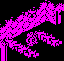
LEAPER, graphic 130: deadly both ways. One at a time (LEAPING, $5B43), on one turn in four by the random number, a leaper jumps: two units a turn up to 48 above where it stood, or until something stops it, and then falls back, with a note pitched by its height each turn it is in the air. Here room $97's two rows of four.
Graphics and their sprites: 130 (SPRITE130).
Measured: rises of 1, 2 units a turn, a leap of at most 49 units, and never more than 1 of the 8 in the air at once.
In the picture: 130 Z 64, 130 Z 64, 130 Z 64, 130 Z 64, 130 Z 100, 130 Z 64, 130 Z 64, 130 Z 64 (60 ms), 130 Z 64, 130 Z 64, 130 Z 64, 130 Z 64, 130 Z 102, 130 Z 64, 130 Z 64, 130 Z 64 (60 ms), 130 Z 64, 130 Z 64, 130 Z 64, 130 Z 64, 130 Z 104, 130 Z 64, 130 Z 64, 130 Z 64 (60 ms), 130 Z 64, 130 Z 64, 130 Z 64, 130 Z 64, 130 Z 106, 130 Z 64, 130 Z 64, 130 Z 64 (60 ms), 130 Z 64, 130 Z 64, 130 Z 64, 130 Z 64, 130 Z 108, 130 Z 64, 130 Z 64, 130 Z 64 (60 ms), 130 Z 64, 130 Z 64, 130 Z 64, 130 Z 64, 130 Z 110, 130 Z 64, 130 Z 64, 130 Z 64 (60 ms), 130 Z 64, 130 Z 64, 130 Z 64, 130 Z 64, 130 Z 112, 130 Z 64, 130 Z 64, 130 Z 64 (60 ms), 130 Z 64, 130 Z 64, 130 Z 64, 130 Z 64, 130 Z 113, 130 Z 64, 130 Z 64, 130 Z 64 (110 ms), 130 Z 64, 130 Z 64, 130 Z 64, 130 Z 64, 130 Z 112, 130 Z 64, 130 Z 64, 130 Z 64 (60 ms), 130 Z 64, 130 Z 64, 130 Z 64, 130 Z 64, 130 Z 110, 130 Z 64, 130 Z 64, 130 Z 64 (60 ms), 130 Z 64, 130 Z 64, 130 Z 64, 130 Z 64, 130 Z 107, 130 Z 64, 130 Z 64, 130 Z 64 (60 ms), and so on; 62 frames, 4.3 s in all.
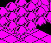
CEILING_DROP, graphic 73: deadly both ways; it hangs until DROP_LATCH is clear, no other is falling (DROPPING), and the random number is under 16 -- one turn in sixteen -- and then falls, a note pitched by its height every turn, and crashes when it lands (THUD_ON_LANDING, CRASH_SOUND). The latch is set when an even-numbered room is entered (ENTER_ROOM) -- every room these hang in is even-numbered -- and cleared by picking something up or taking an extra life. Knight Lore's spiked ball. Here room $58's sixteen, with DROP_LATCH cleared by a poke, as a pick-up clears it, and him standing clear.
Graphics and their sprites: 73 (SPRITE73).
Measured: the first to let go fell 112, 111, 109, 106, 102, 97, 91, 88 -- one unit more each turn (DEC_DZ_AND_UPDATE_UVZ's gravity) -- and landed at 88; the next let go only once it had landed (DROPPING).
In the picture: Z 112, Z 112, Z 112 (60 ms), Z 111, Z 112, Z 112 (150 ms), Z 109, Z 112, Z 112 (150 ms), Z 106, Z 112, Z 112 (150 ms), Z 102, Z 112, Z 112 (160 ms), Z 97, Z 112, Z 112 (180 ms), Z 91, Z 112, Z 112 (180 ms), Z 88, Z 112, Z 112 (180 ms), Z 88, Z 111, Z 112 (110 ms), Z 88, Z 109, Z 112 (110 ms), Z 88, Z 106, Z 112 (120 ms), and so on; 19 frames, 2.7 s in all.
RUN_CLOCK, once a turn: the four digits in CLOCK each hold a count of rows still to roll in their low bits; the rolling ones roll a row a turn (ROLL_CLOCK), and when the last digit has come to rest a light year is taken off (CLOCK_BORROW), each digit that changes given a count of 7. Each digit is printed rows out of line by its count (PRINT_ROLLING_DIGIT), so it rolls down into place like a mechanical counter's wheel. The digits are the font's (FONT), the last inverted. From the first turn of a game: 6000, which rolls all four digits.
Measured: 5999 on the first turn of the game, all four digits rolling from 6000, then a light year every 7 turns, the digit that changes rolling a row a turn for six turns and resting for one.
In the picture: 5999 rolling 6666 (570 ms), 5999 rolling 5555 (50 ms), 5999 rolling 4444 (50 ms), 5999 rolling 3333 (50 ms), 5999 rolling 2222 (50 ms), 5999 rolling 1111 (50 ms), 5999 (50 ms), 5998 rolling 0006 (60 ms), 5998 rolling 0005 (50 ms), 5998 rolling 0004 (60 ms), 5998 rolling 0003 (50 ms), and so on; 29 frames, 1.9 s in all.
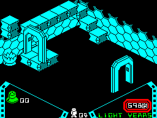
The last life lost: walking into the spike with no lives left, so that NEW_LIFE finds none to take, and GAME_ENDED ends the game -- the summary (the chambers activated and not, the cryonauts lost, a rating from the rooms seen), under the game-over tune (TUNE_GAME_OVER) until a key, then about fourteen seconds more or until a key; then the re-programming scene, run by the main loop with GAME_OVER set and no wait between turns: sparks over the robot's head (SCENE_SPARKS), then a glove, a hammer and a hook taking turns to strike it (SCENE_TOOL), fifteen times, and the menu. No key was pressed. The whole screen, a turn at a time in the scene and a television frame at a time elsewhere.
Graphics and their sprites: 80 (SPRITE80), 81 (SPRITE81), 82 (SPRITE82), 83 (SPRITE83), 88 (SPRITE88), 89 (SPRITE89), 90 (SPRITE25), 91 (SPRITE41).
Measured: the summary 24.7 s, the scene 5.3 s -- the summary stayed through the game-over tune and WAIT_KEY_OR_TIME's wait, a key being never pressed; the scene ran 313 turns of 36,166 to 238,122 T-states, no wait evening them out.
In the picture: 21+37 (70 ms), 22+38 (110 ms), 23+39 (110 ms), 20+36 (100 ms), 21+37 (80 ms), 22+38 (70 ms), 23+39 (80 ms), 48+48 (110 ms), 49+49 (110 ms), 50+50 (100 ms), 51+51 (90 ms), and so on; 232 frames, 33.0 s in all.
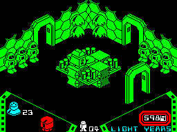
The twenty-fourth chamber, activated as above with CHAMBERS set to $23 beforehand, as the build's ending session sets it: the valve on the socket, the colours, and GAME_ENDED with WON set -- the arrival screen (ARRIVAL_SCREEN) under its tune, the summary as after a lost game but with a better rating, then the scene: the robot lowered into a can of oil and raised again, gleaming white (OILED_ROBOT, SCENE_ROBOT_TOP), the winning tune, and the menu. No key was pressed. The whole screen.
Graphics and their sprites: 100 (SPRITE96), 85 (SPRITE85), 92 (SPRITE25), 93 (SPRITE41).
Measured: the arrival screen 18.9 s, the summary 24.7 s, the scene 2.8 s; the scene ran 188 turns.
In the picture: 23 activated x20 (2450 ms), pass 1 (90 ms), pass 2 (60 ms), pass 3 (60 ms), pass 4 (60 ms), pass 5 (60 ms), pass 6 (60 ms), pass 7 (60 ms), pass 8 (60 ms), pass 9 (60 ms), pass 10 (60 ms), and so on; 126 frames, 56.0 s in all.